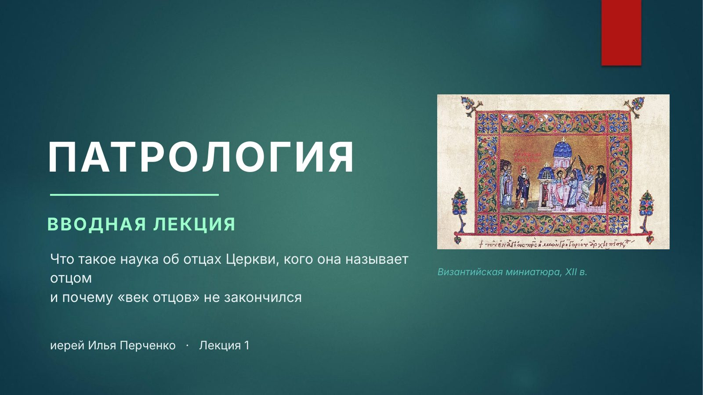
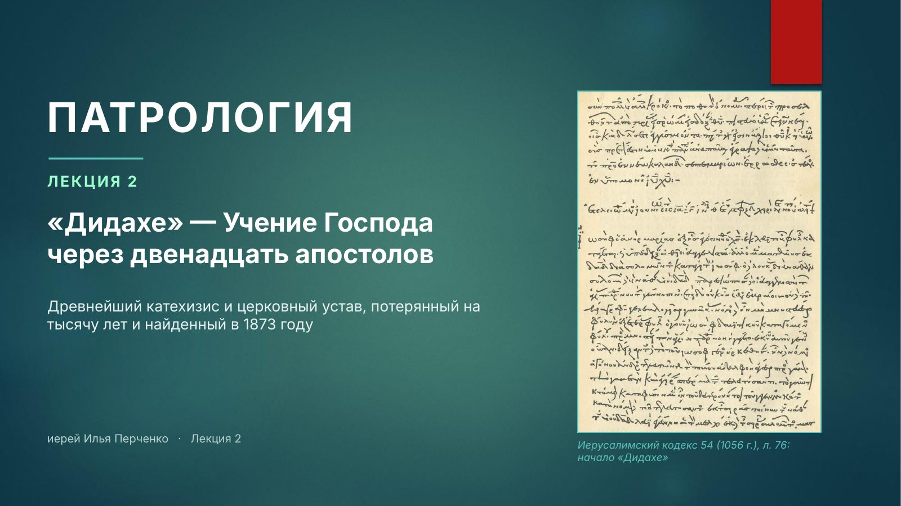
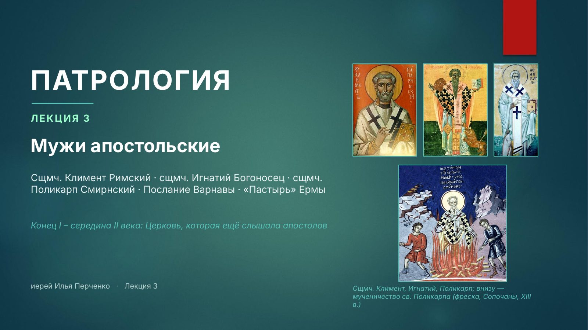

-

Лекция 1
Вводная лекция
Что такое наука об отцах Церкви, кого она называет отцом и почему «век отцов» не закончился
-

Лекция 2
«Дидахе» — Учение Господа через двенадцать апостолов
Древнейший катехизис и церковный устав, потерянный на тысячу лет и найденный в 1873 году
-

Лекция 3 Опубликована 1-я часть · 2-я часть — 26 ноября
Мужи апостольские
Свт. Климент Римский, сщмч. Игнатий Богоносец, сщмч. Поликарп Смирнский, «Послание Варнавы» и «Пастырь» Ермы